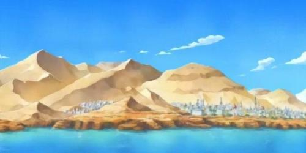

Grand Line
Grand Line, ou la "Grandiose Route Maritime", aussi appelée "La Route de tous les Périls" est un océan sur lequel se déroule la plus grande partie de l'histoire du manga et de l'anime One Piece. Cette mer est découpée en deux segments par Red Line, "Paradise" (楽園パラダイス, Paradaisu; "Paradis") pour la première moitié, et le "Nouveau Monde" (新世界, Shin Sekai) pour la seconde.
Grand Line est l'océan actuel qui suit une ligne imaginaire qui s'étend d'Ouest en Est dans le milieu du monde et perpendiculaire à Red Line. Red Line est un vaste continent qui encercle le globe du Nord au Sud. Ces deux lignes divisent le monde en quatre mers: North, East, West et South Blue.
Il est dit que ce tronçon de l'océan est l'endroit le plus dangereux du monde et est parfois appelé le "Cimetière des Pirates", en raison de cette réputation. La plupart des gens croient qu'il est impossible de quitter en toute sécurité la Route de tous les Périls sauf à son début et la fin; toutefois, le Gouvernement Mondial envoie régulièrement des navires dans Calm Belt en revêtant leurs coques avec du Granit Marin - cela les rend "invisibles", autrement dit plus difficile à détecter, pour les Rois des Mers.
Calm Belt
On appelle en fait Calm Belt les deux régions situées aux extrémités de Grand Line sur lesquelles il n'y a pas de vent. Sans vent, la navigation est censée y être impossible et les bateaux qui s'y aventurent ne peuvent donc pas avancer et se mettent ainsi en grand danger. On apprendra par la suite, par l'intermédiaire de Kobby, que la Marine utilise ce chemin pour pénétrer sur La Route de tous les Périls (et non Reverse Mountain, contrairement aux pirates) grâce à une technologie développée par le Dr. Vegapunk. L'île des femmes, Amazon Lily, se trouve également sur Calm Belt. Amazon Lily est l'île où habite l'impératrice des pirates Kuja, Boa Hancock qui est l'un des 7 Grands Corsaires.Calm Belt est aussi connue pour être infestée de Rois des Mers gigantesques.
les Parties de Grand Line
Paradis:
Il s'agit de la mer que tous les pirates empruntent au commencement de leur aventure. Dans le Chapitre 594 et l'Épisode 513, les pirates attaqués par Eustass Kid supplient ce dernier de ne pas les tuer afin qu'ils retournent au "Paradis", ce qui montre clairement la différence de niveau de ceux qui naviguent dans cette zone.
Nouveau Monde:
On ne connaît pas grand-chose sur la seconde moitié de Grand Line, baptisée le Nouveau Monde, puisque que Luffy et son Équipage viennent tout juste d'y entrer. Cependant, il semblerait que ceux qui y soient allés considèrent la première moitié comme un Paradis en comparaison. Les seules personnes à avoir traversé Grand Line sont Gol D. Roger et son Équipage. Elle est mentionnée par Gecko Moria comme étant un cauchemar, puisqu'il y est allé mais a perdu tout son équipage là-bas après un combat contre Kaidou.
Climat
Le climat reste toujours imprévisible sur "la route de tous les périls", on ne peut prévoir quelles seront les conditions climatiques ne serait-ce qu'une heure après, voire moins. Selon l'auteur, le climat de chaque île est marqué par une saison dominante , ce qui donne finalement seize saisons possibles. Ce dernier indique toujours la prochaine île la plus proche , permettant la navigation, bien qu'il soit en revanche impossible de choisir son parcours ni les lieux visités. Les courants marins de Grand Line sont eux relativement normaux, mais il existe un courant spécial qui relie les trois grandes îles du Gouvernement Mondial.
On peut aussi noter le courant un peu étrange à Reverse Mountain sur Red Line. Tous ces phénomènes font que la simple navigation sur Grand Line relève d'une complexité ardue et offre un début d'explication sur le fait qu'il s'agisse de la mer la plus dangereuse du monde.
Navigation
Les compas normaux ne fonctionnent pas sur Grand Line en raison des champs magnétiques des îles. Pour naviguer dans Grand Line, une boussole spéciale appelée « Log Pose » doit être utilisée. Le temps que le log pose prend pour analyser le champ magnétique et pointer dans une autre direction dépend de l'île. Cette version spéciale du Log Pose se verrouille en permanence sur la même île, ainsi la direction qu'il pointe mène forcement à l'île auquel il est rattaché.
Lieux se trouvant à Grand Line
Première Partie de Grand Line |
||||
|  | ||||
|---|---|---|---|---|
| Whiskey Peak | Firework Island | Little Garden | Drum | Alabasta |
 |
||||
| Jaya | Long Ring Long Land | Water 7 | Enies Lobby | Thriller Bark |
| Archipel de Sabaody | Amazon Lily | Impel Down | Marineford | |
Deuxième Partie de Grand Line |
||||
 |
||||
| Île de Raijin | Île de Risky Red | Île de Mystoria | Punk Hazard | Dressrosa |
 |
 |
|||
| Green Bit | Pays de Wano | Archipel Totland | Île de Brock Colie | Rough-Tell |
| Yurkinyu | Mer d'Ed War | Mer Maubeugemour | Île de Foodvalten | Erbaf |
| Île d'Egg Head | ||||
Hors Serie |
||||
| End-Point | Hand Island | Merveille | ||